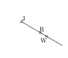
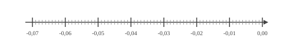
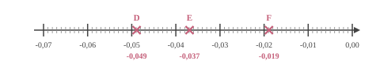
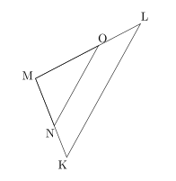
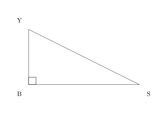

Choisis le calcul qui permet de résoudre l'équation suivante : $4x+9=15$
A. $\dfrac{15-9}{4}$
B. $\dfrac{15}{4}-9$
C. $(15-4)-9$
D. $15\times 4-9$
$4x+9=15$
On enlève $9$ : $4x=15-9$.
Puis on divise par $4$ : $x=\dfrac{15-9}{4}$.
Bonne réponse : A.
03
Question
Dans la figure ci-dessous :
$\widehat{RJW}$ est un angle :
$\square\;$ nul $\square\;$ aigu $\square\;$ droit $\square\;$ obtus $\square\;$ plat

Dans la figure ci-dessous :
$\widehat{RJW}$ est un angle :
$\blacksquare\;$ nul $\square\;$ aigu $\square\;$ droit $\square\;$ obtus $\square\;$ plat
Un angle nul est un angle dont la mesure est égale à 0.
04
Question
Déterminer la valeur exacte de $JK$.
On utilise le théorème de Pythagore dans le triangle $IJK$, rectangle en $J$.
On obtient :
$\begin{aligned}
IJ^2+JK^2&=IK^2\\
JK^2&=IK^2-IJ^2\\
JK^2&=6^2-5^2\\
JK^2&=36-25\\
JK^2&=11\\
JK&={\color{#8B3C52}\boldsymbol{\sqrt{11}}}
\end{aligned}$
Mentalement :
La longueur $JK$ est donnée par la racine carrée de la différence des carrés de $6$ et de $5$.
Cette différence vaut $36-25=11$.
La valeur cherchée est donc : $\sqrt{11}$.
01
Question
Déterminer la valeur de $25\,\%$ de $158$.
$25\,\%$ de $158$ :
$\dfrac{25 \times 158}{100} = 0{,}25 \times 158 = 39{,}5$.
Donc la valeur est 39.
02
Question
Placer les points : $D(-0{,}049), E(-0{,}037), F(-0{,}019)$.


03
Question
Calculer le périmètre exact d'un cercle de rayon $3\text{ cm}$
Sur la figure suivante :
$\leadsto N$ est sur $[MK]$,
$\leadsto O$ est sur $[ML]$, $\leadsto$ les droites $(KL)$ et $(NO)$ sont parallèles. Écrire la double égalité de Thalès.

Dans le triangle $KLM$ :
$\leadsto$ $N\in[MK]$,
$\leadsto$ $O\in[ML]$,
$\leadsto$ $(KL)//(NO)$,
donc d'après le théorème de Thalès, les triangles $KLM$ et $NOM$ ont des longueurs proportionnelles.
$\dfrac{MN}{MK}=\dfrac{MO}{ML}=\dfrac{NO}{KL}$ Remarque On pourrait aussi écrire : $\dfrac{MK}{MN}=\dfrac{ML}{MO}=\dfrac{KL}{NO}$
01
Question
Donner l'écriture décimale de $8{,}67 \times 10^{-1}$.
Sur une carte sur laquelle $6\text{ cm}$ représente $15{,}6\text{ km}$ dans la réalité,
Béatrice mesure son trajet et elle trouve une distance de $7\text{ cm}$. À quelle distance cela correspond dans la réalité ?
Commençons par trouver à combien de $\text{km}$ dans la réalité, $1\text{ cm}$ sur la carte correspond.
$1\text{ cm}$, c'est ${\color{#C5607A}\boldsymbol{6}}$ fois moins que $6\text{ cm}$. $15{,}6\text{ km}\div {\color{#C5607A}\boldsymbol{6}} = 2{,}6\text{ km}$ $1\text{ cm}$ sur la carte correspond donc à ${\color{#C5607A}\boldsymbol{2{,}6}}\text{ km}$ dans la réalité. Cherchons maintenant la distance réelle de son trajet. $7\text{ cm}$, c'est ${\color{#C5607A}\boldsymbol{7}}$ fois $1\text{ cm}$. ${\color{#C5607A}\boldsymbol{2{,}6}}\text{ km}\times {\color{#C5607A}\boldsymbol{7}} = 18{,}2\text{ km}$ son trajet correspond en réalité à une distance de ${\color{#8B3C52}\boldsymbol{18{,}2}}\text{ km}$.
03
Question
Donner le nom du solide suivant :
Cône de révolution
04
Question
Dans le triangle $SBY$, rectangle en $B$, quel calcul doit-on effectuer pour déterminer le cosinus de l’angle $\widehat{BSY}$ ?

La bonne formule est :
$\text{cosinus}(\widehat{BSY}) =
\dfrac{\text{longueur du côté adjacent à l’angle } \widehat{BSY}}{\text{longueur de l’hypoténuse }}=\dfrac{SB}{SY}$.